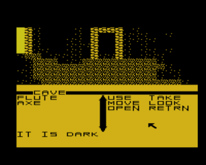
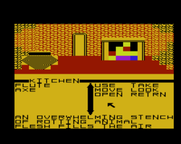
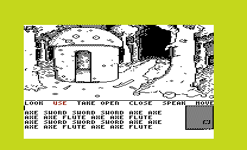
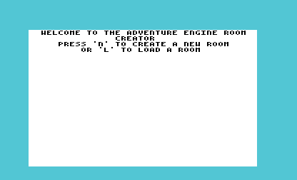
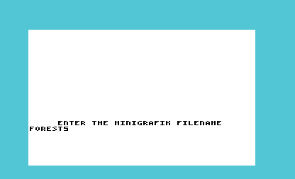
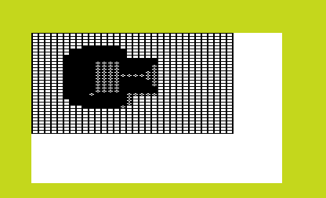
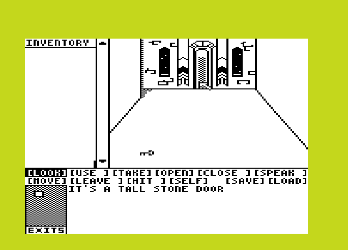
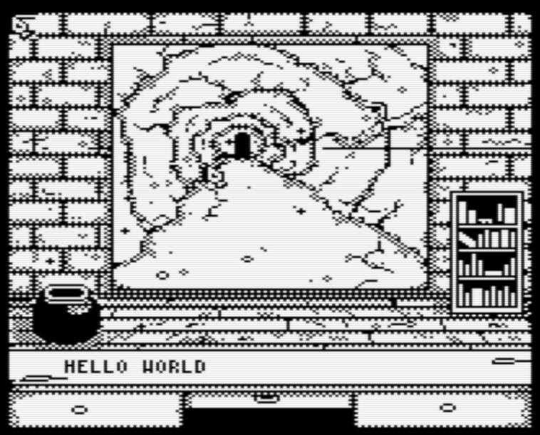

The original devlog for Castle Rex can be found here.
The current state of the project is on my github.
In May (late April) of 2009, my junior year of high school, I started working on a simple point and click adventure game for the Commodore Vic 20: Castle Rex. The game was originally targeted for the unexpanded Vic-20, which I quickly realized was overly ambitious. To preserve the memory layout, and because I thoght less expansion was more "pure", I decided to bump it to require just the 3 Kilobyte expansion. The original implementation used 8x8 user-defined-graphics arranged to produce the individual screens for each room. To assist in the creation of these screens I made a cross-development tool using SDL to paint each screen. I RLE encoded these by hand (WHY!?) into source files to-be-compiled with the executable to produce the (one-file) PRG. Color data was stored separate (also RLE compressed).
The cursor sprite was implemented as a set of 4 UDG's that are swapped with the 4 characters "beneath" it every other frame.
 The projected release date kept getting pushed. I hoped to have had it done before ECCC 2009 (my first ECCC actually), but that didn't happen. Somewhere between ECCC and the summer of 2010, my graduating year of high school, I realized (with the help of some persuasive forum members), that I could do so much more with 8, 16, or 32K of extra memory. Most importantly, I could do individual bitmap rooms instead of the crude collages of UDG's that I had been making. So, I decided to scrap all of my work and start the first rewrite. Aside from some code, I actually had every single screen designed when I made the call to start over. With each rewrite, the graphics would become the major bottleneck in completing the project. The bitmap standard I settled on was the MINIGRAFIK format created by Mike (of the Denial forums). Mike was very supportive of the project from the early stages and his feedback was a major motivator. While I didn't get far with bitmap screens, the end result would certainly be more compelling in the end. This was one of only a couple screens I finished for this iteration of the game. All succesive development on the game engine up to today is based upon th MINIGRAFIK standard though the resolution of the "room" graphics has changed over time.
I went as far as making a suite of native development tools to assist in content creation for this version of the game. In hindsight, I probably should've continued making cross-platform tools like the SDL editor I used in iteration 0, but it was neat to have a unified edit/test/deploy environment. Here you can see the editor's ability to load the room bitmap data, edit its description, and the sprite editor. Sprites in this iteration of the game were proper bitmap sprites (no flickering). They were also variable dimensions, which is critical not only for efficiency, but for functionality since their bounds are used for both rendering and interaction. This is true of the current iteration of the engine as well.
  Progress was still moving at a really good clip. This was all done by July of 2010. I was in good position to get some content produced and finally release the game! The new goal was ECCC 2010- very achievable, right!?
WRONG! Because I decided to rewrite the codebase again! :D
To get a sense how the scope was creeping at this point, here's a look at the structure for "Things" in the engine. Note the "weight" field. I'd been playing with TADS 3 a little too much. That field was never used, and I didn't really have plans for it, but I was trying to make a general purpose adventure engine, which I called VTAC: the Vic Twenty Adventure Creator. Oh boy...
enable .byte ; if 0, the object is not displayed/handled action .byte ; bits: 0:object can be looked at, 1:object usable, 2:object takeable, 3:object openable, ; 4:object closable 5:object "speakable" (whatever that means) 6:object can be moved to, 7:object leavable action2 .byte ; bits: 0:object hittable, 1-7 undefined name .byte ; string ID of name sprite .byte ; sprite ID openState .byte ; if 0= open, $FE= closed, else locked until the item of this ID is used. (if not openable this is error string) dest .byte ; destination of "MOVE" if passable, else ID of preposition for error handling lookAt .byte ; ID of string displayed upon action "LOOK" item .byte ; the item ID of the object or error string weight .byte ; item weight. if > player strength, item cannot be taken. tKey .byte ; the item that must be USE'd on the object to trigger tActions (if 0, no item must be used) tNumActions .byte ; the number of actions that are performed upon action "USE" with the item tKey (if 0, there is no trigger) tActions .byte ; a variable number of actions to be performed by the engine (in the engine's binary format)
Beyond this, the engine now supported scripting via a simple byte-code interpreter as well as the system BASIC. Each room could run its own BASIC code upon entry, and items would, upon "USE", run a bytecode script. The bytecode could optionally transfer control to BASIC for more complex scripting.
Sound like things were getting out of hand? On top of that, I was just starting college. And, not that I was a stellar student, I was a lot busier.
The project is still often on my mind. Here's a recent screenshot (March of 2017) of some progress. I've been playing with the idea of implementing some light RPG elements, but the more I think about that, the less I like the idea. Or rather, the less appeal I think the final result will be. The codebase is pretty much my best 6502 work ever in terms of cleanliness. I'm definitely not intimidated in picking it back up like I was with previous implementations.
I decided to stick with a 96x96 pixel display area. The first bitmap implementation of Castle Rex was a whopping 160x96, which took substantially longer to pixel for and, due to the wide nature of the format, kept leading me to make outdoor scenese instead of indoor, which is a problem for a game that was intended to be primarily set in a castle. To keep the pixeling managable, I'm also trying to keep the pictures high in negative space. Besides taking less time to pixel, I think that style is prettier. There was a period where I was playing with multicolor graphics, but I decided it would take far too long to finish the game in that style. While I love the MacVenture aesthetic of monochrome, I do think multicolor would give the game a much more "Vic" look.